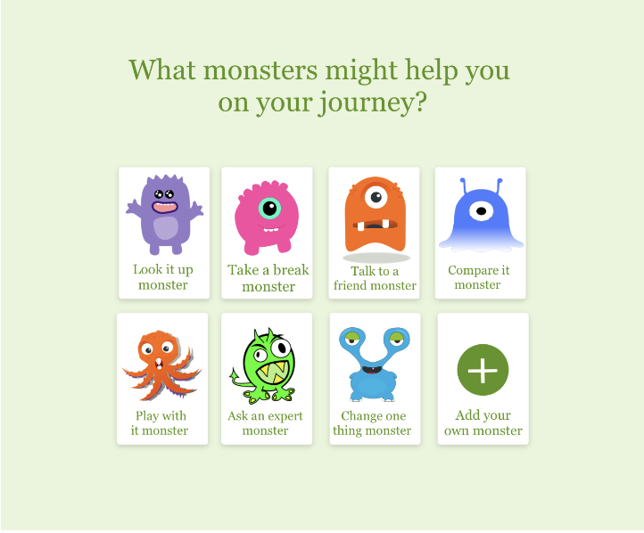
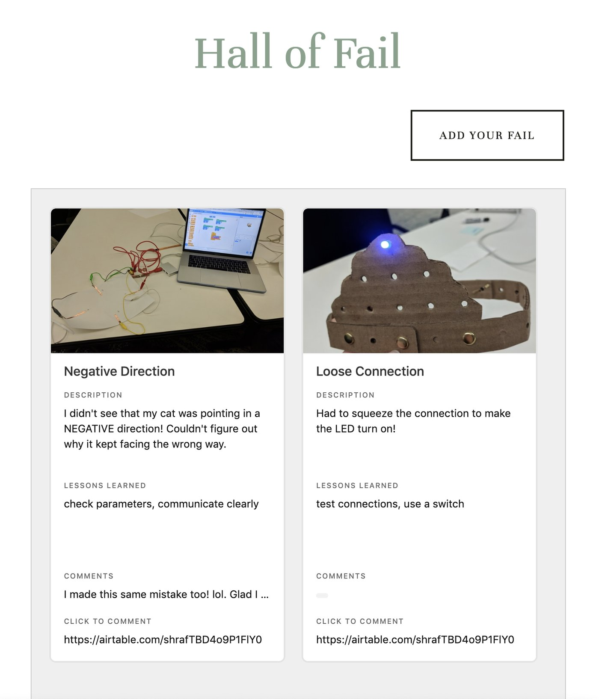
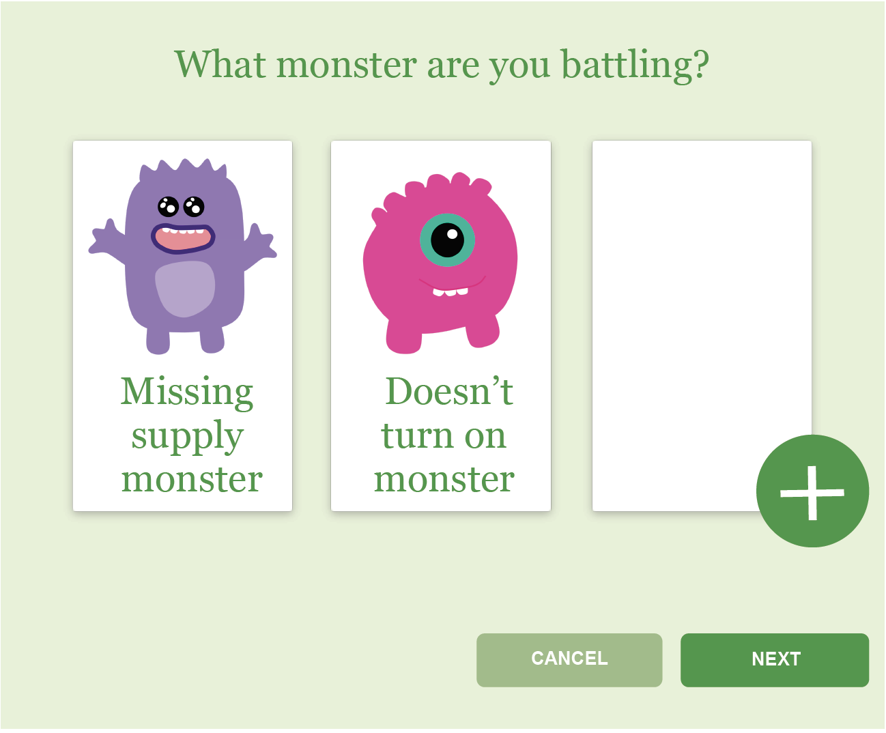
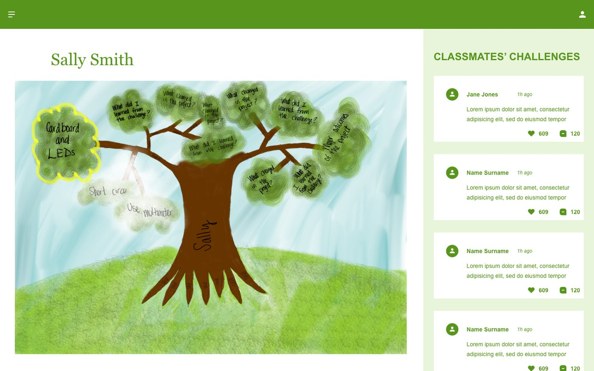
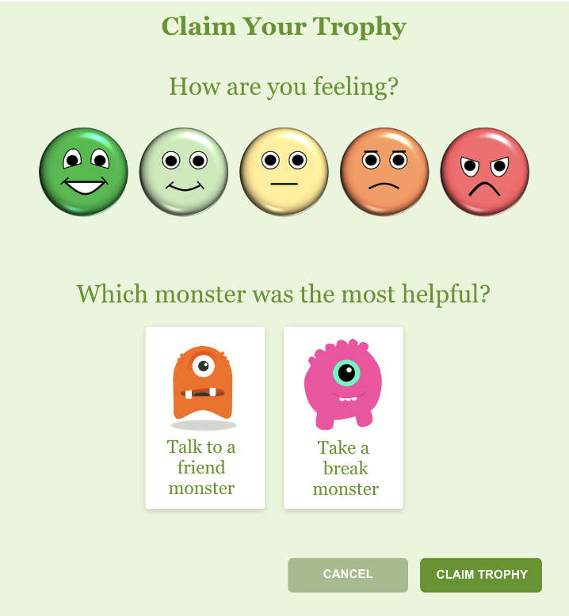
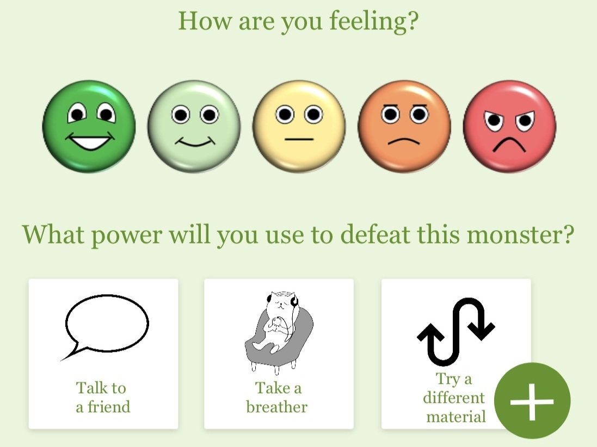

Laura Bloch, M.A. Instructional Technology & Media
Maria Lopez-Delgado, M.A. Design and Development of Digital Games
Problem
Girls, more than boys, tend to assume their encounters with challenges or failures are due to their own inabilities or inadequacies, and consequently give up.
Goal
"Making with Monsters" aims to teach girls to expect challenges as a natural part of the making process, teach them strategies to face challenges, and increase their emotional intelligence and growth mindset.
Rationale
The application prompts girls to begin the making process by contemplating the problem-solving strategies they will need. By helping them to expect and accept the inevitability of challenges, the design aims to increase girls' sense of agency and growth mindsets.


Field Observations
We visited the New York Hall of Science and Dazzling Discoveries' Makerspace, where children were involved in the act of making. We noticed that children, especially girls, showed frustration and sadness when faced with challenges or failures. Many didn't appear to have the strategies or desire to overcome their challenges.
Iterations
Iteration 1"Hall of Fail"

Iteration 2Challenges as branches on a tree

User Insights
- Saw "monsters" as friends
- Expected monsters to help solve problems
- Eager to share knowledge with each other
- Anticipated challenges
Iteration 3Monsters as challenges to be defeated

Iteration 4Monsters as challenges to be defeated with powers

Research
Different scholars have confirmed that children see failure as a reflection of their own abilities, and that it's even more prevalent in girls (Altermatt & Broady, 2009) (Dweck, 1986; Dweck & Leggett, 1988). As cited by Dai (2002), girls often react to failure by giving up, doubting their capabilities, and reacting with annoyance and sadness.
When confronted with challenges, it can be more difficult for girls to accept "letting themselves down" than it is for boys (Carpenter, 2009). Dweck (1987) also highlights the fact that girls often don't see past successes in confronting challenges as an indicator that they may be capable of solving similar problems.
Sadler et al. (2012) observed that girls' interest in STEM-related fields is decreasing in high schools. Additionally, girls were shown to react better to STEM-related areas when the activities involved collaborative work, creativity, hands-on experiences and real-world applications (Cooper, R. & Heaverlo C., 2013).
References
- Altermatt, E. R., & Broady, E. F. (2009). Coping with achievement-related failure: An examination of conversations between friends. Merrill-Palmer Quarterly: Journal of Developmental Psychology, 55(4), 454–457.
- Borasi, R. (1994). Capitalizing on Errors as "Springboards for Inquiry": A Teaching Experiment. Journal for Research in Mathematics Education, 25(2), 166–208. doi:10.2307/749507.
- Carpenter, Peter (2009). Failure in Education. FORUM, 51(1), 35–40. http://doi.org/10.2304/forum.2009.51.1.35.
- Dweck, C. S. (2006). Mindset: The new psychology of success. New York: Random House.
- Dweck, C. S. (2007). Is Math a Gift? Beliefs That Put Females at Risk. In S. J. Ceci & W. M. Williams (Eds.), Why aren't more women in science?: Top researchers debate the evidence (pp. 47–55). Washington, DC, US: American Psychological Association.
- Gorman, M. E., Plucker, J. A., & Callahan, C. M. (1998). Turning Students into Inventors: Active Learning Modules for Secondary Students. Phi Delta Kappan, 79(7), 530–535.
- Lottero-Perdue, Pamela S. and Parry, Elizabeth A. (2017) "Perspectives on Failure in the Classroom by Elementary Teachers New to Teaching Engineering," Journal of Pre-College Engineering Education Research (J-PEER): Vol. 7: Iss. 1, Article 4. https://doi.org/10.7771/2157-9288.1158
- Maltese, A., Simpson, A., & Anderson, A. (2018). Failing to Learn: The impact of failure during making activities. Thinking Skills and Creativity, 30, 116–124. https://doi.org/10.1016/j.tsc.2018.01.003
- Martinez, M. E. (1998). What is Problem Solving. Phi Delta Kappan, 79(8), 605–609.
- Ryoo, J. J., Bulalacao, N., Kekelis, L., McLeod, E., & Henriquez, B. (2015). Tinkering with "Failure": Equity, Learning, and the Iterative Design Process. FabLearn Conference 2015 at Stanford University, September 2015.